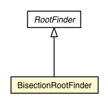

jsl.utilities.rootfinding
Class BisectionRootFinder

java.lang.Object
 jsl.utilities.math.DBHIterativeProcess
jsl.utilities.math.FunctionalIterator
jsl.utilities.rootfinding.RootFinder
jsl.utilities.rootfinding.BisectionRootFinder
jsl.utilities.math.DBHIterativeProcess
jsl.utilities.math.FunctionalIterator
jsl.utilities.rootfinding.RootFinder
jsl.utilities.rootfinding.BisectionRootFinder
public class BisectionRootFinder
- extends RootFinder
|
Method Summary |
protected double |
evaluateIteration()
Evaluate the result of the current iteration. |
protected void |
finalizeIterations()
Perform eventual clean-up operations
(must be implement by subclass when needed). |
protected void |
initializeIterations()
Initializes internal parameters to start the iterative process. |
static void |
main(String[] args)
|
| Methods inherited from class jsl.utilities.rootfinding.RootFinder |
contains, findInterval, findInterval, getLowerLimit, getUpperLimit, hasRoot, hasRoot, hasRoot, setInitialPoint, setInterval, setInterval, setInterval, setInterval, toString |
BisectionRootFinder
public BisectionRootFinder()
BisectionRootFinder
public BisectionRootFinder(FunctionIfc func,
double xLower,
double xUpper)
evaluateIteration
protected double evaluateIteration()
- Description copied from class:
DBHIterativeProcess
- Evaluate the result of the current iteration.
- Specified by:
evaluateIteration in class DBHIterativeProcess
- Returns:
- the estimated precision of the result.
finalizeIterations
protected void finalizeIterations()
- Description copied from class:
DBHIterativeProcess
- Perform eventual clean-up operations
(must be implement by subclass when needed).
- Specified by:
finalizeIterations in class DBHIterativeProcess
initializeIterations
protected void initializeIterations()
- Description copied from class:
DBHIterativeProcess
- Initializes internal parameters to start the iterative process.
- Specified by:
initializeIterations in class DBHIterativeProcess
main
public static void main(String[] args)
- Parameters:
args -
Copyright © 2012 Manuel D. Rossetti. All Rights Reserved.